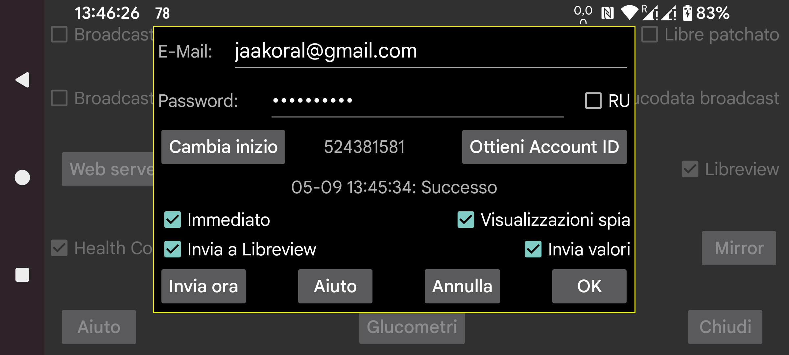

ar be de es fr hi it ja ko nl pl pt ru tr uk uz zh en
Juggluco può inviare dati del glucosio e valori a Libreview.
Come l'app Librelink, invia i dati degli ultimi 89 giorni a Libreview.
Per fare uso di questo servizio, devi creare un account Libreview su https://libreview.com e specificare qui il suo indirizzo e-mail e la password. Non inviare dati che coprono lo stesso periodo allo stesso account LibreView da più di una sorgente (ad esempio sia dall'app Librelink che da Juggluco). Puoi cancellare i dispositivi esistenti su Libreview in Account Settings → My devices. In alternativa, puoi creare un nuovo account Libreview.
Per attivarlo, devi anche selezionare "Invia a libreview".
Juggluco invia nuovi dati a Libreview ogni volta che esci dall'app, a condizione che non l'abbia già fatto nei 20 minuti precedenti. Puoi anche inviarli manualmente a Libreview premendo "Invia ora".
Oltre ai valori del glucosio, anche i valori possono essere inviati a Libreview. Per questo devi toccare "Invia valori" e specificare cosa significhi ogni etichetta.
RU: Devi impostare questo se fai uso di https://libreview.ru invece di https://libreview.com. Questo si applica solo ai sensori Libre 2. I sensori Libre 3 possono essere usati solo con libreview.com, perché non esiste alcuna app Abbott Libre 3 russa.
Immediato: Invia i valori del glucosio a Libreview immediatamente quando arrivano dai sensori Libre 2 o 3. Questo è utile solo in combinazione con LibreLinkUp. Per usarlo devi aggiungere una connessione LibrelinkUp a questo account Libreview in una delle app Libre di Abbott. (Se non c'è alcuna app Abbott Libre nel tuo paese, puoi usare la patched Libre 3 app.)
A volte il valore non è immediatamente visibile perché LibreLinkUp non aggiorna automaticamente la sua visualizzazione. Fai attenzione, LibreLinkUp può mostrare valori obsoleti: se tocchi il grafico, mostra una lettura più vecchia anziché quella corrente — facile fraintendere se non guardi attentamente.
Spy Views: Quando questa opzione è impostata, Juggluco invierà a Libreview se un valore è stato visualizzato o no. Quando questa opzione è disattivata, Juggluco dirà sempre che non è stato visualizzato. Questa opzione invierà queste informazioni a Libreview in modo affidabile solo quando è attivato anche Immediato. Juggluco dovrebbe essere costantemente connesso a internet per intercettare tutte le visualizzazioni dal Libre 3, il Libre 2 le ricorda tutte finché non viene chiuso.
Cambia inizio: Ricomincia da capo; reinvia i dati a partire da una data e ora specificate. Devi premerlo quando passi a un nuovo account Libreview.
Il risultato dell'ultimo tentativo di invio a Libreview è mostrato sotto il pulsante "Ottieni Account ID".
Libreview usa i valori della cronologia per la sua analisi e Juggluco usa i valori del flusso per la sua schermata delle statistiche (menu centrale sinistro->Statistiche). Questa differenza causa piccole differenze tra Libreview e le statistiche di Juggluco. Poiché i valori del flusso sono più estremi, Juggluco è in qualche modo più negativo: tempo in range più basso, maggiore variabilità. Anche il tempo sensore attivo è più piccolo secondo Juggluco; conta ogni valore del flusso mancante.
Juggluco può essere connesso con più sensori contemporaneamente, mentre Librelink gestisce solo un sensore alla volta. Juggluco invia anche i dati da un solo sensore alla volta a Libreview. Lo fa inviando prima i dati da un sensore e solo dopo che non sono disponibili dati da quel sensore, invia i dati dal sensore successivo. Quando Juggluco è passato a un sensore successivo, Juggluco non tornerà a uno precedente, per imitare la politica di un solo sensore di Librelink. Quindi, se esegui più sensori contemporaneamente e un sensore aggiunto più di recente termina prima di uno più vecchio, il sensore più vecchio non invierà più dati a Libreview.
Ottieni Account ID: Se vuoi solo ricevere l'account ID LibreView, ma non inviare dati a Libreview, puoi inserire il tuo indirizzo e-mail e la password e premere su "Ottieni Account ID". Sulla stessa riga prima di questo pulsante, sarà mostrato l'Account ID (può richiedere un po' di tempo e lo schermo non viene aggiornato automaticamente). Recuperare l'Account ID dal server LibreView rende possibile usare un sensore FreeStyle Libre 3 che è già stato usato con l'app Libre 3 di Abbott con questo account LibreView.
Il numero di account ID Libreview può anche essere convertito dall'UUID mostrato nella barra degli indirizzi dei report Libreview e inserito manualmente in Juggluco.
I dati dai sensori Sibionics e Dexcom non sono inviati a Libreview.
Se vuoi salvare i dati in formato Libreview, puoi farlo anche in menu centrale sinistro→Esporta o nel webserver in Juggluco. Sono inclusi anche i valori del glucosio dai sensori Dexcom e Sibionics.